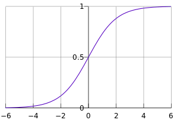
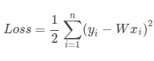
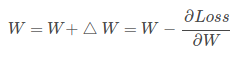

参看：http://blog.csdn.net/zouxy09/article/details/20319673
公式推导比较合理，参看：http://blog.csdn.net/lizhe_dashuju/article/details/49864569
注意，公式的推导使用矩阵抵消了加号/乘号
（1）找最合适的模型（2）找损失函数（3）求模型里参数的最优解。
logistic回归（LR）
优点:计算代价不高,易于理解和实现。
缺点:容易欠拟合,分类精度可能不高。
适用数据类型:数值型和标称型数据。
logistic回归是线性分类模型。《机器学习》书中给logistic函数叫做对数几率函数，简称对率函数。但是网上都称其为逻辑回归。
它与线性回归的差别是 ，它把线性回归的输出的很大范围的值缩小到0-1之间，看着更像是百分比/可能性的含义。
w*x+b得到的是一条直线，但是真正的数据可能并不是分布在直线两侧，有些个例可能分布并不如意，如果使用曲线就可以很好的绕开一些数据。
想要实现这样的功能，只需要在最后加一个logistic函数。对于二分类来说，可以简单的认为大于0.5和小于0.5的两个类别。
所以，logistic回归就是最后被logistic函数归一化后的线性回归。逻辑回归函数就是sigmoid函数，实质是 正样本可能性/负样本可能性 的变换得到。（理解有误，看下面！！！）
sigmoid：1/（1+exp（Y）） Y=xi × wi。
！！！！
看《机器学习》后可知选用sigmoid，并不是推导出来的（看了网上的 正样本可能性/负样本可能性 的变换得到 说法），而是w*x+b得到的是一个数值，
但是考虑到是二分类，因此希望是：
1 | 0 z<0 |
但是这是跳跃形式的，不是连续的函数，因此才考虑到去使用sigmoid(看图更清楚)。Sigmoid函数是一种阶跃函数(step function)：
1 | <0.5 z<0 |

之后把 y=wi * xi 带入 y = 1 / ( 1 + exp( -z ) ) 推导可得 z = wi * xi = ln( y/ (1 - y)) 就得到了上面的 正样本可能性/负样本可能性 的说法。【《机器学习》中，y视为正样本可能性，1-y是为负样本可能性，y / (1-y) 为 x为正样本的相对可能性，称推导出来的z是对数几率logit，它和sigmoid正好相反】
损失函数 == 代价函数
一般选用平方差/最大似然等作为损失误差函数，它求导方便，更容易做梯度下降优化：

当它趋近于0时，损失最小，更趋近于准确值。
求最优解—梯度下降
求最优解的两种方法：
（1）求导。一般对优化函数求解是使用求导的方式，求导以后，导函数为零的地方一般最优解的地方。
损失函数一般无法直接求得最小值。我们都知道，函数求导为0时函数值最小/大。因此对损失函数求导得最小值。
（2）迭代。但是很多情况下，很难求出最优解。可能是参数间太耦合无法求导，也可能是参数太多求导以后无法求解，这时候要使用迭代。理解爬山，能求解的一般只有一个山峰，需要迭代的有很多山峰，要一步一步去找那个最高/低的山峰（如果参数不好，可能结果找到得只是局部最优解）。
如果损失函数是凸函数，那一定有全局最优解。
使用梯度下降法求得w的值，推导可以参考上面第二个链接里的，它在推导时没有漏掉任何一个加减号，但是有个小问题，看评论就可以看到。
梯度下降法就是给w随机赋一个初始值，然后按照一介偏导的反方向移动：

以爬坡为例：我们需要每一步都找下坡最快的地方，也就是每一步我走某个方向，都比走其他方法，要离最小值更近。而这个下坡最快的方向，就是梯度的负方向了。
随机梯度下降
梯度下升算法在每次更新回归系数时都需要遍历整个数据集,该方法在处理100个左右的数据集时尚可,但如果有数十亿样本和成千上万的特征,那么该方法的计算复杂度就太高了。一种改进方法是一次仅用一个样本点来更新回归系数,该方法称为随机梯度下升算法。
数据集并非线性可分,在每次迭代时会引发系数的剧烈改变。
代码
代码
使用逻辑回归识别数字0/1，附有数据
参考：《机器学习》、《机器学习实战》